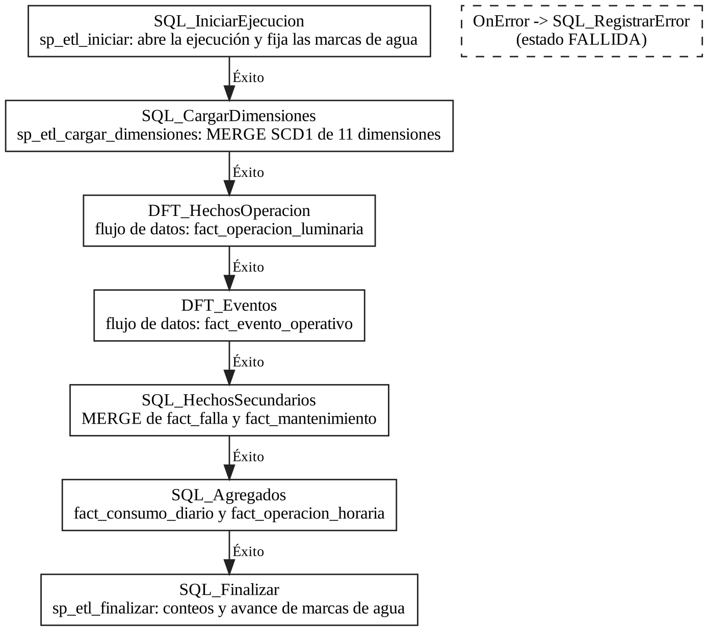
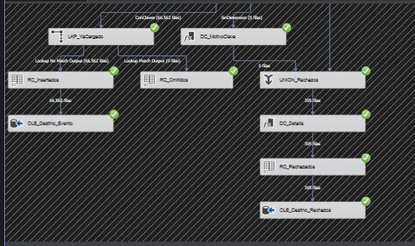
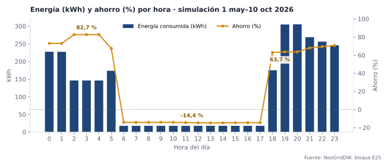
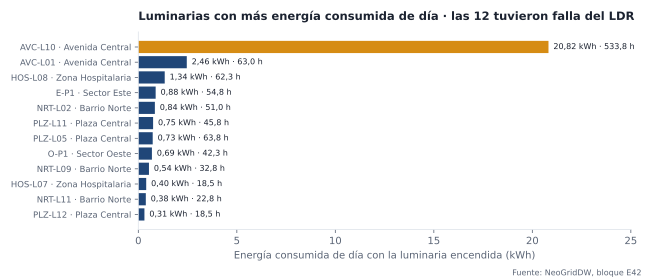
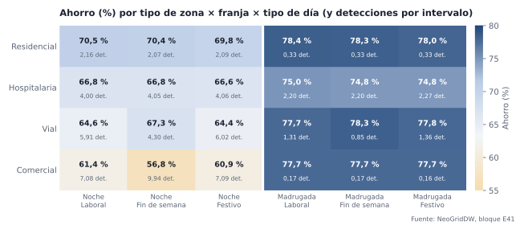
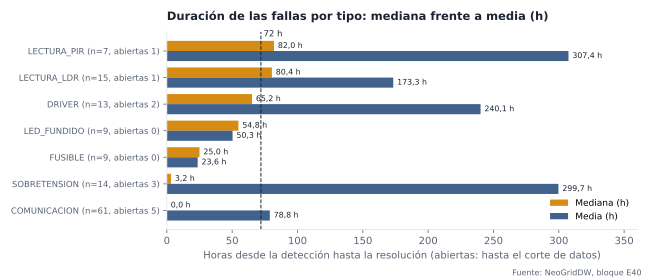
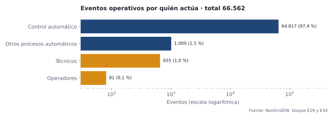
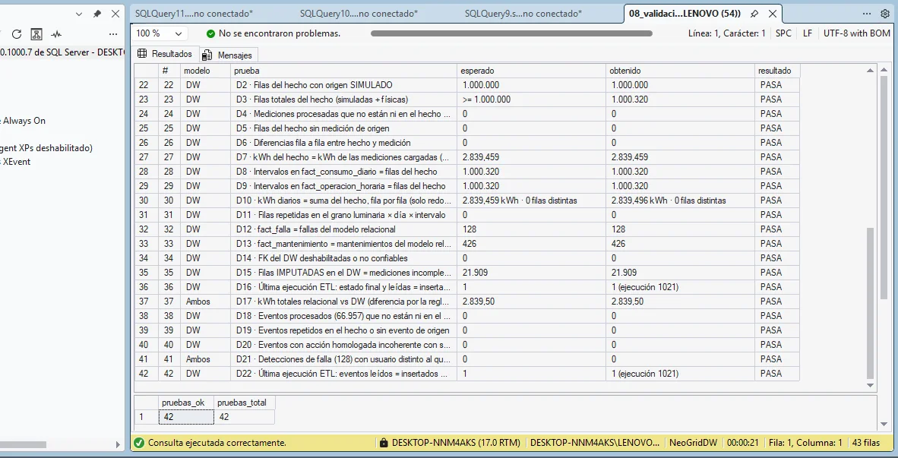

Ecosistema de datos para el alumbrado público inteligente de NeoGrid
De dieciséis postes de una maqueta a un millón de mediciones, un data warehouse, un dashboard y decisiones de operación respaldadas por datos.
1 Identificación
Título
Ecosistema de datos para el alumbrado público inteligente de NeoGrid: modelo relacional, simulación de un millón de mediciones, data warehouse, ETL en SSIS y análisis en Power BI
Módulo
Alumbrado público de la maqueta de ciudad inteligente NeoGrid
Programa académico
Ingeniería de Sistemas y Computación
Sede o extensión
Universidad de Cundinamarca, Extensión Chía
Ciclo de formación
Por confirmar
Tipo de proyecto
Por confirmar
Integrantes
Brayan Fabian Sánchez Sierra · Elkin Arévalo
Asignatura y docente
Big Data · Edison Cañón
Periodo de los datos
1 de mayo al 6 de noviembre de 2026 (simulación hasta el 10 de octubre; maqueta física hasta el 6 de noviembre)
2 Planteamiento del problema
El alumbrado público gasta energía cuando nadie la necesita y, cuando una luminaria falla, la calle queda sin servicio hasta que alguien lo detecta y lo repara.
Un alumbrado convencional enciende todas las luminarias al 100 % desde el anochecer hasta el amanecer, aunque a las 3 de la madrugada no pase nadie. Además, una luminaria con el sensor de luz dañado puede quedar encendida todo el día sin que nadie lo note, y una falla de comunicación o de alimentación puede tardar días en atenderse si no hay un registro que la haga visible.
NeoGrid es la maqueta de ciudad inteligente del curso. El módulo de alumbrado tiene 16 postes en dos tableros (Oeste y Este), cada uno controlado por un ESP32 con un sensor de luz (LDR) y un sensor de movimiento (PIR), y 8 casas con LED. El controlador enciende los postes al oscurecer, baja el brillo en la madrugada y lo sube cuando detecta presencia. El problema de datos es que esas lecturas, por sí solas, no dicen cuánto se ahorra, dónde se desperdicia ni qué fallas pesan más. Para responderlo hace falta modelarlas, darles volumen, cargarlas en un data warehouse y analizarlas.
3 Justificación
Población beneficiaria
Habitantes y peatones de las zonas iluminadas: residenciales, comerciales, hospitalaria y vial, que necesitan luz cuando hay presencia y continuidad del servicio.
Operadores y supervisores del alumbrado, que necesitan saber qué falla, dónde y desde cuándo.
Técnicos de mantenimiento, que reciben órdenes priorizadas.
La entidad que paga la energía, que necesita medir el ahorro.
Pertinencia
La modernización del alumbrado con LED y telegestión es una política activa en Colombia. En octubre de 2026 la Alcaldía de Bogotá anunció más de 100.000 nodos de telegestión, que permiten ajustar el brillo, programar el encendido y detectar fallas a distancia, con un consumo hasta 70 % menor que las luminarias de sodio (Alcaldía de Bogotá, 2026).
El proyecto reproduce a escala ese escenario y demuestra la parte que suele faltar: convertir los datos de la telegestión en conocimiento verificable para decidir.
4 Objetivos
Objetivo general
Construir, analizar y publicar un ecosistema de datos para el módulo de alumbrado público de NeoGrid, que integre un modelo relacional, un millón de mediciones simuladas, un data warehouse cargado por SSIS y un dashboard de Power BI, para generar hallazgos verificables que sustenten decisiones de operación.
Objetivos específicos
Diseñar un modelo relacional normalizado que relacione usuarios, procesos, dispositivos, mediciones y eventos del alumbrado.
Simular de forma reproducible 1.000.000 de mediciones coherentes con el control de la maqueta.
Construir un data warehouse en estrella y un ETL en SSIS con validación, homologación, rechazos y carga incremental.
Analizar los datos en un dashboard de Power BI con indicadores, análisis univariados, bivariados y multivariado.
Documentar cinco conocimientos evidentes y dos decisiones sustentadas, y validar que cada uno se obtiene de los datos.
5 Marco referencial
Antecedentes
Alumbrado adaptativo con sensado de tráfico
Lau, Merrett y White (2013) propusieron un esquema que ajusta el brillo de cada poste según el tráfico detectado. En simulaciones con SUMO y OMNeT++ consumió hasta 30 % menos energía que los esquemas existentes de atenuación o apagado.
Aporte al proyecto: la regla «baja el brillo sin presencia, súbelo con presencia» que usa la maqueta y la simulación.
Sensores autónomos en red para ciudades inteligentes
Lau et al. (2015) evaluaron sobre la topología real de un barrio residencial un esquema con sensores en red. Reportaron que puede usar apenas el 1 a 2 % de la energía de las técnicas convencionales, con utilidad similar o mejor para los usuarios.
Aporte al proyecto: medir el ahorro contra una referencia (luminaria al 100 %), que es la medida «Ahorro %» del dashboard.
Telegestión del alumbrado en Bogotá
El acuerdo «Ciudad Inteligente» de Bogotá instala un nodo de telegestión por punto de luz para controlar el brillo y los horarios a distancia y detectar fallas más rápido. La UAESP estima hasta 70 % menos consumo frente al sodio.
Aporte al proyecto: el contexto local y los dos procesos que se analizan: control del consumo y atención de fallas.
Bases conceptuales
Modelo relacional y normalización (Codd, 1970): tablas, claves y restricciones que protegen la integridad.
Modelado dimensional (Kimball y Ross, 2013): hechos con un grano explícito, dimensiones conformadas y miembros desconocidos.
ETL con SSIS (Microsoft, s. f.-b): flujo de control, flujos de datos, búsquedas de claves y salidas de error.
CRISP-DM (Chapman et al., 2000): las seis fases que organizan la metodología del proyecto.
6 Metodología y cronograma (CRISP-DM)
El proyecto siguió las seis fases de CRISP-DM. Cada fase dejó productos y evidencias que se pueden revisar en el repositorio y en el informe técnico.
Comprensión del negocio
Se definió el problema del alumbrado, los seis procesos (monitoreo, control, atención de fallas, mantenimiento, consumo y seguimiento), sus responsables y las preguntas de análisis.
Evidencias: maqueta en funcionamiento (E01), 10_usuarios_procesos.sql, preguntas P1 a P5.
Fecha por confirmar
Comprensión de los datos
Se estudiaron las lecturas reales de la maqueta (MQTT → NeoGridAlumbrado): luz, presencia, brillo, estado y eventos, y sus problemas (mensajes repetidos del PIR, mayúsculas distintas en los eventos).
Evidencias: E03 a E06, 07_integracion_maqueta.sql.
Fecha por confirmar
Preparación de los datos
Modelo relacional (25 tablas), simulación de 1.000.000 de mediciones, data warehouse en estrella y paquete SSIS que valida, homologa, imputa, rechaza y carga sin duplicar.
Evidencias: scripts 01 a 11, paquete ETL_NeoGrid.dtsx, E07 a E22.
Fecha por confirmar
Modelado y análisis
Consultas analíticas sobre el data warehouse y dashboard de Power BI con indicadores, análisis univariados, bivariados y multivariado.
Evidencias: 13_consultas_analiticas.sql (E24 a E33), 14_powerbi_vistas.sql, dashboard publicado.
Fecha por confirmar
Evaluación
42 pruebas de calidad e integridad, prueba de rechazos, reejecución sin duplicados y conciliación de cada visual del dashboard con su consulta SQL.
Evidencias: 08_validacion.sql (42/42), 15_dashboard_conocimientos.sql (E34 a E45).
Fecha por confirmar
Despliegue
Tablero web de la maqueta en Render, dashboard de Power BI integrado y este sitio publicado en GitHub Pages.
Los datos reales entran por MQTT. NeoGridAlumbrado, la base de la maqueta, no se modifica. NeoGridRelacional une los datos físicos con la simulación, y SSIS carga NeoGridDW, que alimenta el tablero web y Power BI.
Dispositivos
Dispositivo
Cantidad
Función
ESP32 (tableros Oeste y Este)
2
Leen los sensores, controlan los postes y publican por MQTT
Postes LED físicos
16
8 por tablero, con brillo regulable
Luminarias en el modelo
64
16 físicas y 48 solo simuladas, en 6 zonas
Sensores en el modelo
45
LDR (luz), PIR (presencia) y medidores
Casas con LED
8
Dos LED cada una
Funcionalidades
Encendido automático cuando la luz baja de 40 lux.
Brillo de 25 % en la noche y 15 % de 2 a 5 a. m., que sube hacia 100 % al detectar presencia.
Registro de fallas, mantenimientos y eventos con el usuario que actúa.
Cálculo de energía consumida, energía de referencia y ahorro.
Tablero web en vivo y dashboard analítico.
Usuarios y procesos
Hay 11 usuarios con su rol (el sistema automático, 2 operadores, 1 supervisor, 5 técnicos, 1 administrador y 1 analista). Cada proceso tiene un único responsable, y cada acción queda ligada a un usuario.
Proceso
Responsable
Quién actúa
Monitoreo de la red y los sensores
Andrea Gómez (operadora)
El sistema registra lecturas y desconexiones
Control adaptativo del alumbrado
Brayan Sánchez (administrador)
El sistema enciende y ajusta el brillo
Atención de fallas
Miguel Rojas (supervisor)
Los operadores registran y los técnicos reparan
Gestión del mantenimiento
Miguel Rojas (supervisor)
Los técnicos ejecutan las órdenes
Consumo
Elkin Arévalo (analista)
El sistema calcula el consumo diario
Seguimiento
Elkin Arévalo (analista)
ETL, data warehouse y tableros
Tecnologías
ESP32 · Arduino
MQTT (Mosquitto)
Python
SQL Server 2025
SSMS 22
SSIS (Visual Studio 2026)
Power BI
Flask · Render
GitHub Pages
8 Gestión de los datos
Modelo relacional · NeoGridRelacional
25 tablas en tercera forma normal, con 42 claves foráneas y 33 restricciones CHECK que aplican las reglas de negocio dentro del motor. El modelo une catálogos, dispositivos, usuarios y procesos, mediciones y eventos, y cada fila indica su origen (simulado, físico, calculado o prueba).
2,16 %de filas con defectos a propósito para probar el ETL
La simulación es determinista: con el mismo script se obtienen los mismos datos. Sigue las reglas de control de la maqueta: si la luz baja de 40 lux es de noche y la luminaria enciende al 25 % (15 % de 2 a 5 a. m.) y sube hacia 100 % con presencia. La presencia cambia según la zona, la hora, el fin de semana y la lluvia. También se generaron 81 fallas de 7 tipos, 426 mantenimientos y 634 horas de lluvia.
Modelo multidimensional · NeoGridDW
Una constelación de dos estrellas que comparten dimensiones conformadas (fecha, hora, luminaria, ubicación, origen):
fact_evento_operativo. Grano: un evento. 66.562 filas.
Hay también agregados diario (10.512 filas) y horario (228.854 filas) con los mismos totales, y hechos de fallas y mantenimientos. Las dimensiones se actualizan con MERGE (SCD tipo 1) y tienen un miembro desconocido con clave 0.
Proceso ETL en SSIS

Flujo de control de ETL_NeoGrid.dtsx: las dimensiones se cargan antes que los hechos.
Validación: duplicados, fechas inválidas, brillo fuera de 0 a 100 % y valores imposibles.
Limpieza: imputación de nulos (tensión 220 V, potencia según el modelo) y conversión de tipos.
Homologación: la simulación y la maqueta nombran distinto las acciones. El ETL las traduce a un mismo vocabulario (SUBE_BRILLO, BAJA_BRILLO, ANOCHECER, PRESENCIA…).
Atributos generados: energía de referencia, ahorro y calidad del dato.
Búsqueda de claves: 8 dimensiones para mediciones y 10 para eventos. Lo que no encaja va a etl_rechazo con su motivo.
Carga incremental: marca de agua en etl_control, así que reejecutar no duplica.

Ejecución real en Visual Studio: 66.562 eventos insertados y 395 rechazados.
9 Preparación del análisis
El dashboard lee el data warehouse después de la carga SSIS (ejecución 1015), a través de vistas de solo lectura del esquema pbi (14_powerbi_vistas.sql), en modo Importar.
Fuente
NeoGridDW en SQL Server 2025, cargado por el paquete SSIS ETL_NeoGrid.dtsx
Periodo
1 de mayo al 6 de noviembre de 2026: la simulación cubre del 1 de mayo al 10 de octubre y las sesiones de la maqueta física llegan hasta el 6 de noviembre
Registros
1.000.320 mediciones de 15 min · 66.562 eventos operativos · 128 fallas (81 simuladas y 47 físicas). Se excluyen las 3 mediciones y 2 eventos de origen PRUEBA.
Variables
Fecha, hora, franja, tipo de día, luminaria, zona, tipo de zona, origen, calidad del dato · brillo (%), luz (lux), detecciones, energía y energía de referencia (Wh), ahorro (Wh), en falla, encendida · tipo y duración de falla (h) · acción homologada, proceso, usuario, crítico
Reglas de calidad
Sin duplicados por luminaria e intervalo; brillo entre 0 y 100 %; fechas dentro del periodo; nulos imputados y marcados; lecturas anómalas marcadas, no borradas; filas sin dimensión válida rechazadas con su motivo; 42 pruebas de integridad aprobadas
Preguntas que guían el análisis
P1. ¿Cuánta energía ahorra la atenuación adaptativa frente a operar al 100 % y en qué horas se concentra el ahorro?
P2. ¿Qué luminarias consumen energía de día y eso se asocia a fallas del sensor de luz?
P3. ¿Difieren las zonas en presencia y ahorro, y cambia según la franja y el tipo de día?
P4. ¿Qué tipos de falla tardan más en resolverse?
P5. ¿Quién genera los eventos operativos y cuántos son críticos?
10 Dashboard Power BI
El dashboard tiene cuatro páginas: Resumen, Univariados, Bivariados y Multivariado. Los filtros de fecha, zona, origen y tipo de día están en todas las páginas, y al hacer clic en una barra se filtran los demás visuales.
El dashboard interactivo se integra aquí cuando quede publicado en el servicio de Power BI.
Distribución del brillo nocturno (% de intervalos)
P1
Univariado U2
Fallas por rango de duración
P4
Univariado U3
Eventos por acción homologada
P5
Bivariado B1
Energía y ahorro según la hora
P1, P2
Bivariado B2
Presencia y ahorro por tipo de zona
P3
Bivariado B3
Duración media y mediana por tipo de falla
P4
Multivariado M1
Ahorro por tipo de zona × franja × tipo de día, calculado sobre la combinación
P3
11 Conocimientos evidentes
Cada conocimiento sale de los análisis del dashboard y se recalcula en SQL con los bloques indicados de 15_dashboard_conocimientos.sql, para que cualquiera pueda repetirlo. Datos: 1.000.320 mediciones, 128 fallas y 66.562 eventos, del 1 de mayo al 6 de noviembre de 2026.
C1
El control adaptativo ahorra el 70,4 % de la energía, y el ahorro es máximo en la madrugada

Pregunta
P1. ¿Cuánta energía ahorra la atenuación frente a operar al 100 % y en qué horas se concentra el ahorro?
Variables
Hora del día, brillo (%), energía consumida y energía de referencia (Wh), detecciones.
Procedimiento
Ahorro % = Σ(referencia − consumida) / Σ referencia, en total (KPI 3, bloque E34) y por hora (B1, bloque E38). La referencia es la luminaria al 100 % de noche. Apoyo: distribución del brillo nocturno (U1, bloque E35).
Resultado
Se consumieron 2.839 kWh frente a 9.606 kWh de referencia: 70,4 % de ahorro. De 2 a 4 a. m. el ahorro llega a 82,7 %, con 0,4 detecciones por intervalo. A las 19 y 20 h baja a 63,6 %, con 5,9 detecciones. El 94 % de los intervalos nocturnos está entre 10 y 40 % de brillo (media 26,3 %, mediana 26,8 %, máximo 79,8 %).
Hallazgo
El ahorro sigue a la presencia: en las horas con menos gente el control baja más el brillo. Como la media y la mediana del brillo son casi iguales, la operación típica está cerca del 26 % y no hay un grupo grande de horas a plena potencia.
Interpretación
La atenuación cumple su objetivo. La franja de mayor consumo es de 19 a 21 h, cuando hay más presencia.
Utilidad
Respalda mantener la atenuación y muestra que el margen de mejora está al comienzo de la noche.
Limitación
La referencia es teórica (100 % toda la noche). Frente a otra política, como un horario fijo con atenuación, el ahorro sería menor.
C2
El consumo de día se concentra en luminarias con falla del sensor de luz, y el indicador de falla no lo detecta

Pregunta
P2. ¿Qué luminarias consumen energía de día y eso se asocia a fallas del LDR?
Variables
Luminaria, zona, es_noche, encendida, en_falla, energía (Wh), fallas por tipo.
Procedimiento
Se filtran los intervalos de día con la luminaria encendida, se suma la energía por luminaria y se cruza con las fallas LECTURA_LDR (tabla del Resumen, bloque E42). Luego se compara el encendido diurno en intervalos marcados y no marcados como falla (bloque E43).
Resultado
El 0,81 % de los intervalos de día tiene la luminaria encendida, y por eso el ahorro de cada hora diurna es −14 %. AVC-L10 consumió 20,82 kWh de día (533,8 h), ocho veces más que la siguiente (AVC-L01, 2,46 kWh). Las 12 luminarias con más consumo diurno tuvieron una falla LECTURA_LDR, y la de AVC-L10 sigue abierta tras 1.639,8 h. Los 4.331 intervalos diurnos encendidos ocurrieron en intervalos no marcados como falla (0 en los marcados).
Hallazgo
El desperdicio diurno se concentra en pocas luminarias, todas con falla del LDR, y el campo en_falla no lo refleja.
Interpretación
Una falla del LDR no apaga la calle: hace que el control crea que es de noche. Como la luminaria «funciona», el monitoreo no la marca y el gasto pasa inadvertido.
Utilidad
Indica qué luminarias revisar primero y qué alerta falta en el monitoreo (Decisión 1).
Limitación
Es una asociación: los datos no prueban que todo el consumo diurno se deba al LDR. Las cifras de AVC-L10 dependen de una sola falla larga.
C3
Las diferencias de ahorro entre zonas y tipos de día aparecen solo en la noche; en la madrugada todas ahorran entre 75 y 78 %

Pregunta
P3. ¿Difieren las zonas en presencia y ahorro, y cambia según la franja y el tipo de día?
Variables
Tipo de zona, franja horaria, tipo de día, detecciones, energía y referencia.
Procedimiento
Multivariado M1: cada celda se calcula sobre las filas que cumplen a la vez la zona, la franja y el tipo de día (bloque E41). No es la unión de tres resultados separados. Apoyo bivariado: zona × presencia y ahorro (B2, bloque E39).
Resultado
En la madrugada el ahorro va de 74,8 a 78,4 % en todas las combinaciones. En la noche (18 a 24 h) va de 56,8 % (comercial, fin de semana, 9,94 detecciones por intervalo) a 70,5 % (residencial, laboral, 2,16). La zona vial va al revés que la comercial: su fin de semana tiene menos presencia y más ahorro (67,3 % frente a 64,6 % en días laborales). En el bivariado, residencial tiene 174 detecciones por luminaria-día y 72,4 % de ahorro, y comercial 565 y 66,7 %.
Hallazgo
La combinación comercial + noche + fin de semana es la de menor ahorro. El efecto del tipo de día depende de la zona, y eso no se ve mirando cada variable por separado.
Interpretación
Mayor presencia se asocia con menor ahorro, sobre todo al comienzo de la noche. Una regla única de atenuación no aprovecha estas diferencias.
Utilidad
Señala dónde y cuándo ajustar el perfil de brillo: noches de zonas comercial y vial.
Limitación
Los festivos son 8 días (de 1.920 a 5.376 intervalos por celda). Es una asociación: la presencia simulada sigue reglas definidas por el equipo.
C4
En el caso típico, las fallas de sensores (PIR y LDR) son las que más tardan, y las fallas abiertas inflan los promedios

Pregunta
P4. ¿Qué tipos de falla tardan más en resolverse?
Variables
Tipo de falla, severidad, origen, horas de duración, abierta.
Procedimiento
Distribución por rangos de duración (U2, bloque E36), media y mediana por tipo (B3, bloque E40) y revisión de las fallas más largas (bloque E45).
Resultado
Las 128 fallas tienen una media de 137 h, pero una mediana de 11,2 h (E34): el 53,9 % se resuelve en menos de 24 h y el 7,8 % dura 14 días o más (E36). Por tipo, las medianas más altas son PIR 82 h y LDR 80,4 h, seguidas de driver con 65,2 h. Sobretensión tiene una media de 299,7 h, pero una mediana de solo 3,2 h. Las 8 fallas más largas (de 1.232 a 1.801 h) siguen abiertas.
Hallazgo
La distribución está muy sesgada a la derecha. Las pocas fallas abiertas elevan las medias, mientras que en el caso típico los sensores son el cuello de botella.
Interpretación
Si se prioriza por promedio se atendería primero la sobretensión. La mediana muestra que lo que demora la reparación típica son los sensores, que además causan el desperdicio de C2.
Utilidad
Sustenta el tiempo máximo de atención y el cierre de las fallas abiertas (Decisión 2).
Limitación
Los grupos son pequeños (7 a 61 fallas por tipo). Las fallas abiertas se miden hasta el corte de los datos. Las 47 fallas físicas de comunicación se resuelven casi al instante (mediana 0 h) y bajan la mediana de ese tipo.
C5
El 97,4 % de los eventos los genera el control automático, y los críticos son el 0,28 %

Pregunta
P5. ¿Quién genera los eventos operativos y cuántos son críticos?
Variables
Proceso, usuario que actúa, acción homologada, crítico.
Procedimiento
Conteo de eventos por quién actúa, porcentaje de críticos (KPI 6, bloque E34; apoyo E29) y frecuencia de las acciones homologadas (U3, bloque E37).
Resultado
De 66.562 eventos, 64.817 son del control adaptativo (97,4 %), 1.009 de otros procesos automáticos, 655 de técnicos y 81 de operadores. Hay 186 eventos críticos (0,28 %). BAJA_BRILLO (34,8 %) y SUBE_BRILLO (30,9 %) suman dos tercios de los eventos. FALLA_INICIO es el 0,19 %.
Hallazgo
La carga humana es baja y se concentra en fallas y mantenimientos. Lo crítico queda escondido entre decenas de miles de ajustes de brillo.
Interpretación
Un tablero que muestre todos los eventos no ayuda al operador. Hay que separar los críticos y los de atención.
Utilidad
Define qué ver en la pantalla del operador y sustenta que la alerta de la Decisión 1 sea un evento crítico aparte.
Limitación
«Crítico» es una regla del modelo (falla o desconexión), no una medición del impacto en la calle.
12 Validación
Se obtienen de los datos: cada visual del dashboard se recalcula en SQL con su bloque (E34 a E45). Sin filtros, el dashboard y SQL dan los mismos valores: 1.000.320 mediciones, 70,4 % de ahorro y 186 eventos críticos.
Se pueden repetir: la simulación es determinista, el ETL se puede reejecutar sin duplicar (reejecución 1021: 0 filas) y todos los scripts están en el repositorio.
Datos de prueba excluidos: las 3 mediciones y 2 eventos de origen PRUEBA, que se insertaron a propósito para probar los rechazos, no entran al análisis (vistas pbi).
Tamaño de los grupos: las comparaciones por zona usan entre 156.250 y 437.820 intervalos, y las celdas del multivariado entre 1.920 y 72.808. Las fallas van de 7 a 61 casos por tipo; por eso se informa la mediana además de la media.
Faltantes y anómalos (E44): el 95,73 % de los intervalos es original, el 1,76 % imputado, el 2,08 % anómalo y el 0,43 % imputado y anómalo. Este último grupo da un ahorro extremo (−1.081 %), así que se revisó: es pequeño y, al dejar solo los originales, el ahorro pasa de 70,44 % a 70,60 %. La conclusión no cambia y las filas se conservan marcadas.
Atípicos (E45): las 8 fallas más largas (de 1.232 a 1.801 h) se revisaron antes de interpretar la media. Todas siguen abiertas, por eso no se descartan: se informan aparte y se comparan con la mediana.
Asociación, no causalidad: las relaciones entre presencia, zona, fallas y consumo se presentan como asociaciones observadas.

08_validacion.sql: 42 de 42 pruebas en PASA (20 sobre el relacional y 22 sobre el data warehouse).
13 Decisiones
D1 · Reparar el LDR de las luminarias que encienden de día y crear una alerta de encendido diurno
Acción
Mantenimiento correctivo de sensor para las 12 luminarias con consumo diurno, empezando por AVC-L10. Agregar una alerta crítica cuando una luminaria siga encendida de día más de 4 intervalos seguidos (1 h).
Respaldo
C2: AVC-L10 con 20,82 kWh de día y su falla LDR abierta hace 1.639,8 h; las 12 luminarias suman 30,1 kWh diurnos y todas tuvieron falla LDR; ninguno de los intervalos diurnos encendidos estaba marcado como falla.
Dirigida a
Proceso de atención de fallas (supervisor Miguel Rojas) y técnico de electrónica. Primero la Avenida Central y luego las zonas Hospitalaria, Barrio Norte y Plaza Central.
Mejora esperada
Consumo diurno cerca de cero y fallas del LDR detectadas el mismo día.
Indicador
«Encendida de día %» (hoy 0,81 %) y «kWh de día» por semana. Meta: menos de 0,1 % y alertas atendidas en menos de 24 h.
Limitaciones
La asociación con el LDR no prueba la causa: hay que confirmar en campo antes de cambiar el sensor. El umbral de 1 h es una propuesta que se debe calibrar.
D2 · Tiempo máximo de 72 h para fallas de sensores y driver, y cierre de las 12 fallas abiertas
Acción
Fijar 72 h como tiempo máximo de atención para las fallas de PIR, LDR y driver, asignadas por especialidad. Revisar y cerrar primero las 12 fallas abiertas, empezando por las 8 más largas, que superan las 1.200 h.
Respaldo
C4: medianas de 82 h (PIR), 80,4 h (LDR) y 65,2 h (driver), frente a una mediana general de 11,2 h. Las fallas abiertas elevan la media general a 137 h.
Dirigida a
Procesos de atención de fallas y gestión del mantenimiento; técnicos de electrónica y electricistas.
Mejora esperada
Menos días con sensores dañados, que además causan consumo innecesario (C2), y promedios que reflejen la operación real.
Indicador
Mediana de duración por tipo de falla (meta: menos de 72 h para PIR y LDR) y número de fallas abiertas por más de 72 h (hoy 12 abiertas).
Limitaciones
Las duraciones simuladas siguen reglas del equipo y los grupos son pequeños (7 a 15 por tipo). El tiempo máximo se debe recalibrar con datos reales.
14 Productos y resultados
Producto esperado
Producto alcanzado
Evidencia verificable
Modelo relacional con usuarios, procesos, dispositivos, mediciones y eventos
El modelo relacional, la simulación, el data warehouse y el ETL quedaron construidos y verificados: 42 pruebas aprobadas, carga sin pérdidas y reejecución sin duplicados.
El dashboard responde las cinco preguntas con indicadores, análisis univariados, bivariados y multivariado, y cada cifra se puede recalcular en SQL.
Los cinco conocimientos llevan a dos decisiones concretas, con su indicador de seguimiento.
Limitaciones
La mayor parte de los datos es simulada. Las sesiones físicas de la maqueta cubren pocas horas.
Los grupos de fallas son pequeños y los festivos son solo 8 días.
El ahorro se mide contra una referencia teórica del 100 %.
Oportunidades de mejora
Acumular más horas de operación real de la maqueta para recalibrar las reglas de presencia.
Automatizar la alerta de encendido diurno de la Decisión 1 en el ESP32 o en el tablero.
Programar la actualización del dashboard después de cada ejecución del ETL.
Chapman, P., Clinton, J., Kerber, R., Khabaza, T., Reinartz, T., Shearer, C. y Wirth, R. (2000). CRISP-DM 1.0: Step-by-step data mining guide. SPSS.
Codd, E. F. (1970). A relational model of data for large shared data banks. Communications of the ACM, 13(6), 377–387. https://doi.org/10.1145/362384.362685
Kimball, R. y Ross, M. (2013). The data warehouse toolkit: The definitive guide to dimensional modeling (3.ª ed.). Wiley.
Lau, S. P., Merrett, G. V. y White, N. M. (2013). Energy-efficient street lighting through embedded adaptive intelligence. En 2013 International Conference on Advanced Logistics and Transport (ICALT). IEEE. https://doi.org/10.1109/ICAdLT.2013.6568434
Lau, S. P., Merrett, G. V., Weddell, A. S. y White, N. M. (2015). A traffic-aware street lighting scheme for smart cities using autonomous networked sensors. Computers & Electrical Engineering, 45, 192–207. https://doi.org/10.1016/j.compeleceng.2015.06.011